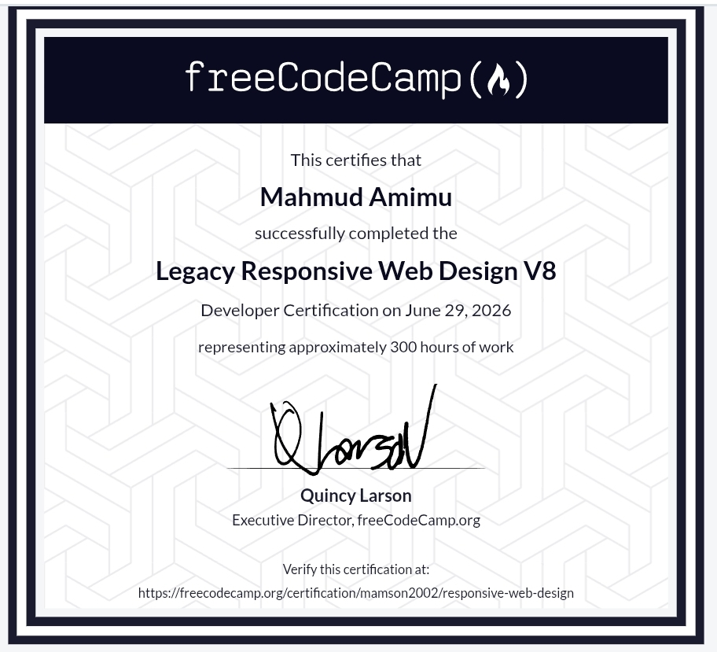

About Me

Hello! I'm Mahmud, a forward-thinking software engineering student driven by the challenge of turning complex logic into smooth, user-centric digital experiences. My journey in tech is built on a foundation of continuous learning and hands-on experimentation.
I focus on clean architecture, accessible design, and writing efficient code. When I'm not studying core engineering principles, I'm usually building projects or refining my development workflow.
Education
B.Sc. Software Engineering (In Progress)
Northwest University Kano
Currently deep-diving into data structures, software architecture, and computational theory, bridging academic concepts with modern development practices.
Technical Core
Semantic Architecture
Building the structural skeleton of the web. Focused deeply on accessibility, document hierarchy, and SEO-friendly structural patterns.
Interface Styling
Crafting responsive, fluid layouts. Well-versed in modern layouts, responsive design states, and keeping code modular and maintainable.
Dynamic Scripting
Handling client-side behavior with vanilla programming logic. Writing clean, event-driven processes, DOM manipulation, and asynchronous operations.
Backend Environments
Extending capabilities beyond the browser using Node.js environments to handle server-side logic, script automation, and scalable backend workflows.
Featured Work
Developer Portfolio v1
HTML / CSS / JS
My very first benchmark project. Built from scratch to demonstrate clean structural coding, responsive layouts, and smooth single-page state routing without external frameworks.
Certifications

Responsive Web Design
freeCodeCamp Academic Authority
An intensive program covering semantic HTML, advanced CSS layout strategies, responsive design principles, and visual accessibility standards.
Verify CredentialDeployment & Workflow
Tools and cloud infrastructure platforms I utilize for local version control, staging environments, and production hosting.
Development Philosophy
"Complexity is easy; simplicity is the real work."
I believe great engineering isn't about using the flashiest tools; it's about solving real problems with reliable, maintainable code. I prioritize building software that works seamlessly for every user, regardless of their device or network speed.
What's Next
Master complex system designs and backend engineering architectures within my university curriculum.
Expand my stack toward full-stack application architecture and database management solutions.
Contribute significantly to open-source initiatives and collaborative developer communities globally.
Get In Touch
Have an interesting project or opportunity? Let's discuss it.